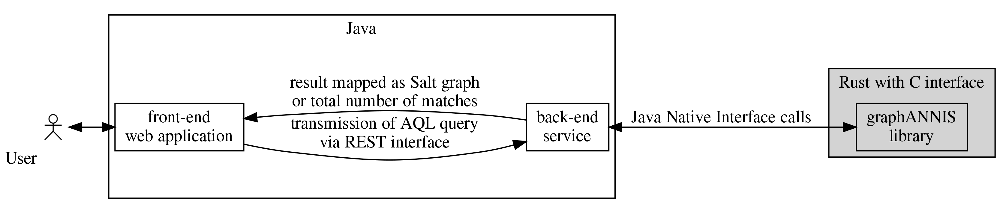
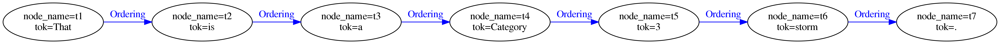
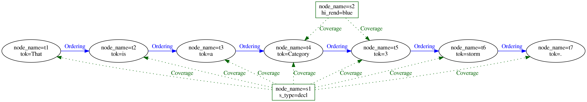
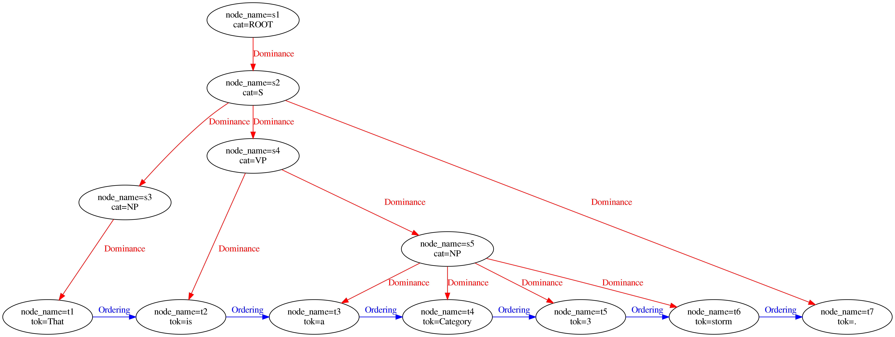
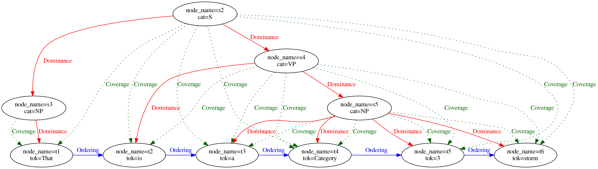
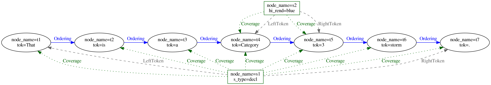

Introduction
The graphANNIS library is a new backend implementation of the ANNIS linguistic search and visualization system.
It is part of the larger system with a web-based front-end, a REST-service (both written in the Java programming language).  As a backend, it is in charge of performing the actual AQL queries and returning the results, which can be either the number of matches, the IDs of the matches or sub-graphs for a specific set of matches.
Crates
GraphANNIS currently consists of the following sub-crates:
- graphannis-core (
core/): Generic functionality for representing, storing and querying a generic property graph. - graphannis (
graphannis/): The complete library with support for linguistic corpora and AQL - graphannis-cli (
cli/) : A command line interface to e.g. import corpora or search them. - graphannis-capi (
cli/) : A C-API for graphANNIS. - graphannis-tutorial (
examples/tutorial): An example how to use the API.
Data model
The data model and concepts used by graphANNIS are similar to the ones of Salt (see the Salt model guide for more information). Historically, Salt and ANNIS with its query language AQL have been developed in parallel, sharing concepts and ideas how a linguistic corpus should be modeled as a directed labeled graph. Still, there are differences because of the purpose of each model: Salt should represent the annotation and data sources without loosing information while the ANNIS data model transforms the data model to allow an efficient search.
GraphANNIS uses a data model that allows performing searches with AQL (and thus is compatible with its data model). By using graphs, as Salt does, it is more flexible in modeling the data and can be more close to Salt than the relational database scheme of older ANNIS version could be. Some parts of the data model are exposed to the outside, e.g. when a user applies changes to a graph. Others are internal and are used to index structures needed for AQL, but which can be deduced from the information in the public data model.
Representing annotations as graph
Elements of the graph
The following figure gives an overview of the elements of the graphANNIS model, which is based on a directed graph (see Cormen et al. 2009, p. 11681).

GraphANNIS does not partition the data documents like it was done in relANNIS, graphANNIS partitions the corpora into
- information about the nodes and node labels, and
- edges and edge label information which are partitioned again into components.
In this model, each node is internally identified by a unique ID. Node labels consist of a namespace, a name, and a value and are connected to a node by its ID. No explicit representation of nodes exists: If a node exists there must be at least one label for this node. There is a special label named "annis::node_name"2 that can be applied to any node to mark its existence.
GraphANNIS has the concept of components for edges. A component has a type, a name, and a layer. It consists of edges and edge labels. Edges between two nodes are uniquely defined inside a component with the source and target node ID. There can not be more than one edge between the same two nodes inside the same component. Each edge can have multiple edge labels. In addition to the source and target node ID, edge labels also have namespaces, names and values. For one edge, only one edge label having the same namespace and name can exist. Graphs are the aggregation of node labels and edge components.
Corpus structure
GraphANNIS has two kinds of nodes:
- annotation graph nodes and
- corpus graph nodes.
They are both parts of the same graph structure but are distinguished by the special label "annis::node_type".
It can either have the value "node" for nodes belonging to the annotation graph or "corpus" for nodes belonging to the corpus graph.
Nodes that belong to a corpus graph are connected with edges that belong to a component of the type PartOf.
The source node is always the node that is part of the (sub-) corpus, and the target node is the node which is higher in the corpus graph hierarchy.

In this example, each annotation graph node belongs to exactly one document and the corpus graph is a tree. However, the data model allows to add an annotation node to several documents, and a document or sub-corpus can be part of several (sub-) corpora. In this regard, graphANNIS is more flexible than Salt. In addition to "corpus" and "node", you can add your own types of node, e.g. "datasource" for nodes that should not be treated like a document in meta-data searches, but represent a data source like a text.
Tokens
Since AQL has no concept of textual data sources, the leafs of the annotation graph in graphANNIS are the tokens.
Tokens have a special label "annis::tok" which has the spanned text as its value.
Additionally, tokens are connected with edges that belong to a component of type Ordering.

The ordering edges are very similar to the explicit SOrderRelation edges in Salt, except that they are not obligatory but are needed to determine the order of the tokens in the absence of any character index.
They also support multiple tokenizations because there can be more than one component of the type Ordering.
When there are multiple components with this type, the name of the component corresponds to the name of the tokenization and is empty for the default tokenization.
Spans
Spans are nodes that are not a token but cover a set of tokens.
They also implicitly cover the original text that is covered by these tokens.
GraphANNIS expresses these coverage relations by using explicit edges between the spans and each token it covers.
These edges are part of a component of the type Coverage.

Dominance relations
While spans are used to describe non-hierarchical node structures, hierarchical structures like constituent trees are modeled using edges of the type Dominance.

These edges can also have additional labels if the annotation scheme requires it.
In contrast to Salt, where nodes have different types, in graphANNIS, only the edges are typed.
Thus, Dominance edges can be in theory added to any node.
Since they imply text-coverage, these components should be non-cyclic.
Pointing relations
For relations that are not implying text-coverage, edges of type Pointing can be used.
These have the same semantics as the SPointingRelation of Salt and can have additional labels for expressing edge annotations.
The type of pointing relation in AQL corresponds to the name of the edge component in graphANNIS.
T. H. Cormen, C. E. Leiserson, R. L. Rivest, and C. Stein, Introduction to Algorithms, 3rd ed. The MIT Press, 2009.
This is a fully qualified representation of the label name which includes the reserved namespace "annis".
Indexes for faster query execution
GraphANNIS uses helper edges to speed-up AQL query execution.
These are automatically created or updated when a graph update is executed via the apply_update(...) function of the CorpusStorage structure.
Users of the API do not have to add these edges by their-self.
Inherited coverage
Dominance relations imply text-coverage and thus any node connected inherits the covered token from its child nodes. Instead of traversing the dominance edges on query time, inherited coverage relations are explicitly added to the nodes.

Left-most and right-most token of a node
These components of type LeftToken and RightToken allow providing faster implementations for some operators that deal with text coverage or precedence.
Their target node is the left-most or right-most covered token of a node.
The covered token are ordered by their position in the chain of Ordering relations.
If there is a path of any length from token \({t_1}\) to \({t_2}\), \({t_1}\) is more “left” than \({t_2}\).

While the coverage edges are similar to the SSpanningRelation, the left and right token edges are inspired from the two columns of the node table in relANNIS (the legacy relational database implementation of ANNIS) with the same name.
Each node of the annotation graph that is not a token must have a left and right token edge because AQL implicitly requires all nodes to be connected to tokens.
Lookup for all left- or right-aligned nodes of a token is possible by accessing the inverse edges of the LeftToken and RightToken component.
How to embed into applications
GraphANNIS was developed as a new backend for the ANNIS linguistic search and visualization system but can be embedded into other applications as well. It provides an API to add annotation graphs, querying them with AQL and retrieving subgraphs for matches. This chapter is a tutorial in to how to embed graphANNIS into your own application.
Currently, graphANNIS can be embedded into programs written in these programming languages:
- Python (version 3.6 or later)
- Java (version 8 or later)
- Rust
- C (No tutorial yet)
Python Tutorial
Installation
GraphANNIS works with applications written for Python 3.6 or later. You can download the graphANNIS library with pip
pip install graphannis
In some environments (e.g. Ubuntu Linux), you have to use pip3 instead to select Python 3.
pip3 install graphannis
API documentation
The API documentation is available at http://graphannis-python.readthedocs.io/.
Corpus data directory
Data is organized in corpora, where each corpus has a name and annotations can only refer to other annotations in the same corpus.
A CorpusStorageManager is used to access a collection corpora by their name.
from graphannis.cs import CorpusStorageManager
with CorpusStorageManager() as cs:
print(cs.list())
This will print an empty list, because no corpora have been created yet.
Per default, the CorpusStorageManager uses the sub-directory data of the current working directory to store the corpora.
You can change the location with the db_dir parameter:
from graphannis.cs import CorpusStorageManager
with CorpusStorageManager(db_dir='/tmp/graphannis-data') as cs:
print(cs.list())
Only one process can access a graphANNIS data directory, other processes will fail to open it if there is another process holding a lock.
The CorpusStorageManager is thread-safe, thus multiple threads of the same process can call all functions in parallel.
Adding corpus data
Linguistic annotations as represented in graphANNIS as directed graphs (see the data model section for more information).
You can add nodes and edges via the apply_update(...) function.
It takes the corpus name and a list of graph updates as argument.
These graph update lists are represented by the class graphannis.graph.GraphUpdate.
E.g the following code creates a graph update for the tokenized sentence “That is a Category 3 storm.”
Normally, you would not add all events manually in the source code, which gets a bit verbose, but have input data that you map to update events.
from graphannis.graph import GraphUpdate
g = GraphUpdate()
# First argument is the node name.
g.add_node("tutorial/doc1#t1")
# First argument is the node name,
# then comes the annotation namespace, name and value.
g.add_node_label("tutorial/doc1#t1", "annis", "tok", "That")
g.add_node("tutorial/doc1#t2")
g.add_node_label("tutorial/doc1#t2", "annis", "tok", "is")
g.add_node("tutorial/doc1#t3")
g.add_node_label("tutorial/doc1#t3", "annis", "tok", "a")
g.add_node("tutorial/doc1#t4")
g.add_node_label("tutorial/doc1#t4", "annis", "tok", "Category")
g.add_node("tutorial/doc1#t5")
g.add_node_label("tutorial/doc1#t5", "annis", "tok", "3")
g.add_node("tutorial/doc1#t6")
g.add_node_label("tutorial/doc1#t6", "annis", "tok", "storm")
g.add_node("tutorial/doc1#t7")
g.add_node_label("tutorial/doc1#t7", "annis", "tok", ".")
# Add the ordering edges to specify token order.
# The names of the source and target nodes are given as arguments,
# followed by the component layer, type and name.
g.add_edge("tutorial/doc1#t1", "tutorial/doc1#t2", "annis", "Ordering", "")
g.add_edge("tutorial/doc1#t2", "tutorial/doc1#t3", "annis", "Ordering", "")
g.add_edge("tutorial/doc1#t3", "tutorial/doc1#t4", "annis", "Ordering", "")
g.add_edge("tutorial/doc1#t4", "tutorial/doc1#t5", "annis", "Ordering", "")
g.add_edge("tutorial/doc1#t5", "tutorial/doc1#t6", "annis", "Ordering", "")
g.add_edge("tutorial/doc1#t6", "tutorial/doc1#t7", "annis", "Ordering", "")
You could add additional annotations like part of speech as labels on nodes.
For labels on edges, you can use the add_edge_label(...) function.
This GraphUpdate object can then be used with the applyUpdate(...) function:
with CorpusStorageManager() as cs:
cs.apply_update("tutorial", g)
# this now includes the "tutorial"
print(cs.list())
Querying
There are two functions to query a corpus with AQL:
count(...)returns the number of matches, andfind(...)returns a paginated list of matched node IDs.
You have to give the corpus name and the query as arguments to both functions.
The following example searches for all tokens that contain a s character.1
with CorpusStorageManager() as cs:
number_of_matches = cs.count("tutorial", 'tok=/.*s.*/')
print(number_of_matches)
matches = cs.find("tutorial", 'tok=/.*s.*/', offset=0, limit=100)
print(matches)
Output:
2
[['tutorial/doc1#t2'], ['tutorial/doc1#t6']]
Getting subgraphs
The result from the find(...) function can be used to generate a subgraph for the matches.
It will contain all covered nodes of the matches and additionally a given context (defined in tokens).
from graphannis.util import node_name_from_match
with CorpusStorageManager() as cs:
matches = cs.find("tutorial", 'tok . tok', offset=0, limit=100)
for m in matches:
print(m)
G = cs.subgraph("tutorial", node_name_from_match(m), ctx_left=2, ctx_right=2)
print("Number of nodes in subgraph: " + str(len(G.nodes)))
Output:
['tutorial/doc1#t1', 'tutorial/doc1#t2']
Number of nodes in subgraph: 4
['tutorial/doc1#t2', 'tutorial/doc1#t3']
Number of nodes in subgraph: 5
['tutorial/doc1#t3', 'tutorial/doc1#t4']
Number of nodes in subgraph: 6
['tutorial/doc1#t4', 'tutorial/doc1#t5']
Number of nodes in subgraph: 6
['tutorial/doc1#t5', 'tutorial/doc1#t6']
Number of nodes in subgraph: 5
['tutorial/doc1#t6', 'tutorial/doc1#t7']
Number of nodes in subgraph: 4
The result object of the subgraph(...) function is the type NetworkX MultiDiGraph.
NetworkX is a graph library, that provides basic graph access and manipulation functions, but also implements graph traversal and other graph algorithms.
Note: The subgraph(...) function takes a single corpus name as argument instead of a list, so you need to know to which corpus a matched node belongs to.
Normally a corpus is structured into subcorpora and documents.
GraphANNIS uses node types and relations of type PartOf to model the corpus structure.
If you have document nodes and the PartOf relation between the annotation nodes and its document, you can use the
subcorpus_graph(...) function to get all annotation nodes for a given list of document names.
with CorpusStorageManager() as cs:
g = GraphUpdate()
# create the corpus and document node
g.add_node('tutorial', node_type='corpus')
g.add_node('tutorial/doc1', node_type='corpus')
g.add_edge('tutorial/doc1','tutorial', 'annis', 'PartOf', '')
# add the corpus structure to the existing nodes
g.add_edge('tutorial/doc1#t1','tutorial/doc1', 'annis', 'PartOf', '')
g.add_edge('tutorial/doc1#t2','tutorial/doc1', 'annis', 'PartOf', '')
g.add_edge('tutorial/doc1#t3','tutorial/doc1', 'annis', 'PartOf', '')
g.add_edge('tutorial/doc1#t4','tutorial/doc1', 'annis', 'PartOf', '')
g.add_edge('tutorial/doc1#t5','tutorial/doc1', 'annis', 'PartOf', '')
g.add_edge('tutorial/doc1#t6','tutorial/doc1', 'annis', 'PartOf', '')
g.add_edge('tutorial/doc1#t7','tutorial/doc1', 'annis', 'PartOf', '')
# apply the changes
cs.apply_update('tutorial', g)
# get the whole document as graph
G = cs.subcorpus_graph('tutorial', ['tutorial/doc1'])
print(G.nodes)
Output:
['tutorial/doc1#t1', 'tutorial/doc1#t6', 'tutorial/doc1#t4', 'tutorial/doc1#t2', 'tutorial/doc1#t7', 'tutorial/doc1#t5', 'tutorial/doc1#t3']
You can get an overview of AQL here or detailed information in the User Guide.
Java Tutorial
Installation
GraphANNIS works with applications written for Java 8 or later. If you are using Apache Maven as your build system, you can add a dependency to graphANNIS with the following Maven dependency configuration:
<dependency>
<groupId>org.corpus-tools</groupId>
<artifactId>graphannis</artifactId>
<version>__version__</version>
</dependency>
Replace __version__ with the latest released version of the Java language bindings, e.g.
by searching for it on Maven Central.
API documentation
The API documentation is available at http://www.javadoc.io/doc/org.corpus-tools/graphannis/.
Corpus data directory
Data is organized in corpora, where each corpus has a name and annotations can only refer to other annotations in the same corpus.
A CorpusStorageManager is used to access a collection corpora by their name.
package org.corpus_tools;
import org.corpus_tools.graphannis.CorpusStorageManager;
import org.corpus_tools.graphannis.errors.GraphANNISException;
public class ListCorpora {
public static void main(String[] args) throws GraphANNISException {
CorpusStorageManager cs = new CorpusStorageManager("data");
String[] corpora = cs.list();
System.out.println(corpora.length);
}
}
This will print a 0, because no corpora have been created yet.
In this example, the CorpusStorageManager uses the sub-directory data of the current working directory to store the corpora.
You can also use an absolute path as argument:
CorpusStorageManager cs = new CorpusStorageManager("/tmp/graphannis-data");
Only one process can access a graphANNIS data directory, other processes will fail to open it if there is another process holding a lock.
The CorpusStorageManager is thread-safe, thus multiple threads of the same process can call all functions in parallel.
Adding corpus data
Linguistic annotations as represented in graphANNIS as directed graphs (see the data model section for more information).
You can add nodes and edges via the applyUpdate(...) function.
It takes the corpus name and a list of graph updates as argument.
These graph update lists are represented by the class GraphUpdate.
E.g the following code creates a graph update for the tokenized sentence “That is a Category 3 storm.”.
Normally, you would not add all events manually in the source code, which gets a bit verbose, but have input data that you map to update events.
The resulting GraphUpdate object can then be used with the applyUpdate(...) function to insert the changes into the corpus.
package org.corpus_tools;
import org.corpus_tools.graphannis.CorpusStorageManager;
import org.corpus_tools.graphannis.GraphUpdate;
import org.corpus_tools.graphannis.errors.GraphANNISException;
public class ApplyUpdate {
public static void main(String[] args) throws GraphANNISException {
CorpusStorageManager cs = new CorpusStorageManager("data");
GraphUpdate g = new GraphUpdate();
// First argument is the node name.
g.addNode("tutorial/doc1#t1");
// First argument is the node name,
// then comes the annotation namespace, name and value.
g.addNodeLabel("tutorial/doc1#t1", "annis", "tok", "That");
g.addNode("tutorial/doc1#t2");
g.addNodeLabel("tutorial/doc1#t2", "annis", "tok", "is");
g.addNode("tutorial/doc1#t3");
g.addNodeLabel("tutorial/doc1#t3", "annis", "tok", "a");
g.addNode("tutorial/doc1#t4");
g.addNodeLabel("tutorial/doc1#t4", "annis", "tok", "Category");
g.addNode("tutorial/doc1#t5");
g.addNodeLabel("tutorial/doc1#t5", "annis", "tok", "3");
g.addNode("tutorial/doc1#t6");
g.addNodeLabel("tutorial/doc1#t6", "annis", "tok", "storm");
g.addNode("tutorial/doc1#t7");
g.addNodeLabel("tutorial/doc1#t7", "annis", "tok", ".");
// Add the ordering edges to specify token order.
// The names of the source and target nodes are given as arguments,
// followed by the component layer, type and name.
g.addEdge("tutorial/doc1#t1", "tutorial/doc1#t2", "annis", "Ordering", "");
g.addEdge("tutorial/doc1#t2", "tutorial/doc1#t3", "annis", "Ordering", "");
g.addEdge("tutorial/doc1#t3", "tutorial/doc1#t4", "annis", "Ordering", "");
g.addEdge("tutorial/doc1#t4", "tutorial/doc1#t5", "annis", "Ordering", "");
g.addEdge("tutorial/doc1#t5", "tutorial/doc1#t6", "annis", "Ordering", "");
g.addEdge("tutorial/doc1#t6", "tutorial/doc1#t7", "annis", "Ordering", "");
cs.applyUpdate("tutorial", g);
String[] corpora = cs.list();
if(corpora.length > 0) {
System.out.println(corpora[0]);
} else {
System.out.println("No corpus found");
}
}
}
You could add additional annotations like part of speech as labels on nodes.
For labels on edges, you can use the addEdgeLabel(...) function.
Querying
There are two functions to query a corpus with AQL:
count(...)returns the number of matches, andfind(...)returns a paginated list of matched node IDs.
You have to give name of the corpus and the query as arguments to both functions.
The following example searches for all tokens that contain a s character.1
package org.corpus_tools;
import java.util.Arrays;
import java.util.Optional;
import org.corpus_tools.graphannis.CorpusStorageManager;
import org.corpus_tools.graphannis.CorpusStorageManager.QueryLanguage;
import org.corpus_tools.graphannis.errors.GraphANNISException;
public class Query {
public static void main(String[] args) throws GraphANNISException {
CorpusStorageManager cs = new CorpusStorageManager("data");
long number_of_matches = cs.count(Arrays.asList("tutorial"), "tok=/.*s.*/", QueryLanguage.AQL);
System.out.println("Number of matches: " + number_of_matches);
String[] matches = cs.find(Arrays.asList("tutorial"), "tok=/.*s.*/", QueryLanguage.AQL, 0, Optional.of(100l));
for (int i = 0; i < matches.length; i++) {
System.out.println("Match " + i + ": " + matches[i]);
}
}
}
Output:
Number of matches: 2
Match 0: tutorial/doc1#t2
Match 1: tutorial/doc1#t6
Getting subgraphs
The result from the find(...) function can be used to generate a subgraph for the matches.
It will contain all covered nodes of the matches and additionally a given context (defined in tokens).
package org.corpus_tools;
import java.util.Arrays;
import java.util.List;
import java.util.Optional;
import org.corpus_tools.graphannis.CorpusStorageManager;
import org.corpus_tools.graphannis.Util;
import org.corpus_tools.graphannis.CorpusStorageManager.QueryLanguage;
import org.corpus_tools.graphannis.errors.GraphANNISException;
import org.corpus_tools.graphannis.model.Graph;
import org.corpus_tools.graphannis.model.Node;
public class FindSubgraph {
public static void main(String[] args) throws GraphANNISException {
CorpusStorageManager cs = new CorpusStorageManager("data");
String[] matches = cs.find(Arrays.asList("tutorial"), "tok . tok", QueryLanguage.AQL, 0, Optional.of(100l));
for (String m : matches) {
System.out.println(m);
// convert the match string to a list of node IDs
List<String> node_names = Util.nodeNamesFromMatch(m);
Graph g = cs.subgraph("tutorial", node_names, 2, 2, Optional.empty());
// iterate over all nodes of type "node" and output the name
int numberOfNodes = 0;
for (Node n : g.getNodesByType("node")) {
numberOfNodes++;
}
System.out.println("Number of nodes in subgraph: " + numberOfNodes);
}
}
}
Output:
tutorial/doc1#t1 tutorial/doc1#t2
Number of nodes in subgraph: 4
tutorial/doc1#t2 tutorial/doc1#t3
Number of nodes in subgraph: 5
tutorial/doc1#t3 tutorial/doc1#t4
Number of nodes in subgraph: 6
tutorial/doc1#t4 tutorial/doc1#t5
Number of nodes in subgraph: 6
tutorial/doc1#t5 tutorial/doc1#t6
Number of nodes in subgraph: 5
tutorial/doc1#t6 tutorial/doc1#t7
Number of nodes in subgraph: 4
The result object of the subgraph(...) function is the type Graph, which provides basic graph access functions (see the Javadoc for details).
Note: The subgraph(...) function takes a single corpus name as argument instead of a list, so you need to know to which corpus a matched node belongs to.
Normally a corpus is structured into subcorpora and documents.
GraphANNIS uses node types and relations of type PartOf to model the corpus structure.
If you have document nodes and the PartOf relation between the annotation nodes and its document, you can use the
subcorpus_graph(...) function to get all annotation nodes for a given list of document names.
package org.corpus_tools;
import java.util.Arrays;
import org.corpus_tools.graphannis.CorpusStorageManager;
import org.corpus_tools.graphannis.GraphUpdate;
import org.corpus_tools.graphannis.errors.GraphANNISException;
import org.corpus_tools.graphannis.model.Graph;
import org.corpus_tools.graphannis.model.Node;
public class SubcorpusGraph {
public static void main(String[] args) throws GraphANNISException {
CorpusStorageManager cs = new CorpusStorageManager("data");
GraphUpdate g = new GraphUpdate();
// create the corpus and document node
g.addNode("tutorial", "corpus");
g.addNode("tutorial/doc1", "corpus");
g.addEdge("tutorial/doc1", "tutorial", "annis", "PartOf", "");
// add the corpus structure to the existing nodes
g.addEdge("tutorial/doc1#t1", "tutorial/doc1", "annis", "PartOf", "");
g.addEdge("tutorial/doc1#t2", "tutorial/doc1", "annis", "PartOf", "");
g.addEdge("tutorial/doc1#t3", "tutorial/doc1", "annis", "PartOf", "");
g.addEdge("tutorial/doc1#t4", "tutorial/doc1", "annis", "PartOf", "");
g.addEdge("tutorial/doc1#t5", "tutorial/doc1", "annis", "PartOf", "");
g.addEdge("tutorial/doc1#t6", "tutorial/doc1", "annis", "PartOf", "");
g.addEdge("tutorial/doc1#t7", "tutorial/doc1", "annis", "PartOf", "");
// apply the changes
cs.applyUpdate("tutorial", g);
// get the whole document as graph
Graph subgraph = cs.subcorpusGraph("tutorial", Arrays.asList("tutorial/doc1"));
for (Node n : subgraph.getNodesByType("node")) {
System.out.println(n.getName());
}
}
}
Output:
tutorial/doc1#t1
tutorial/doc1#t2
tutorial/doc1#t3
tutorial/doc1#t4
tutorial/doc1#t5
tutorial/doc1#t6
tutorial/doc1#t7
You can get an overview of AQL here or detailed information in the User Guide.
Rust Tutorial
Installation
Add a dependency to graphANNIS in you Cargo.toml file:
graphannis = "2.4.8"
API documentation
The API documentation is available at https://docs.rs/graphannis/.
Corpus data directory
Data is organized in corpora, where each corpus has a name and annotations can only refer to other annotations in the same corpus.
A CorpusStorage is used to access a collection corpora by their name.
use graphannis::CorpusStorage;
use std::path::PathBuf;
fn main() {
let cs = CorpusStorage::with_auto_cache_size(&PathBuf::from("data"), true).unwrap();
let corpora = cs.list().unwrap();
let corpus_names: Vec<String> = corpora
.into_iter()
.map(|corpus_info| corpus_info.name)
.collect();
println!("{:?}", corpus_names);
}
This will print an empty list, because no corpora have been created yet.
In this example, the CorpusStorage uses the sub-directory data of the current working directory to store the corpora.
You can also use an absolute path as argument:
let cs = CorpusStorage::with_auto_cache_size(&PathBuf::from("/tmp/graphannis-data"), true)?;
Only one process can access a graphANNIS data directory, other processes will fail to open it if there is another process holding a lock.
The CorpusStorage is thread-safe, thus multiple threads of the same process can call all functions in parallel.
Adding corpus data
Linguistic annotations as represented in graphANNIS as directed graphs (see the data model section for more information).
You can add nodes and edges via the apply_update(...) function.
It takes the corpus name and a list of graph updates as argument.
These graph update lists are represented by the class GraphUpdate.
E.g the following code creates a graph update for the tokenized sentence “That is a Category 3 storm.”.
Normally, you would not add all events manually in the source code, which gets a bit verbose, but have input data that you map to update events.
The resulting GraphUpdate object can then be used with the apply_update(...) function to insert the changes into the corpus.
use graphannis::update::{GraphUpdate, UpdateEvent};
use graphannis::CorpusStorage;
use std::path::PathBuf;
fn main() -> Result<(), Box<dyn std::error::Error>> {
let cs = CorpusStorage::with_auto_cache_size(&PathBuf::from("data"), true).unwrap();
let mut g = GraphUpdate::new();
// First add the node (with the default type "node"),
// then all node labels for the node.
g.add_event(UpdateEvent::AddNode {
node_name: "tutorial/doc1#t1".to_string(),
node_type: "node".to_string(),
})?;
g.add_event(UpdateEvent::AddNodeLabel {
node_name: "tutorial/doc1#t1".to_string(),
anno_ns: "annis".to_string(),
anno_name: "tok".to_string(),
anno_value: "That".to_string(),
})?;
g.add_event(UpdateEvent::AddNode {
node_name: "tutorial/doc1#t2".to_string(),
node_type: "node".to_string(),
})?;
g.add_event(UpdateEvent::AddNodeLabel {
node_name: "tutorial/doc1#t2".to_string(),
anno_ns: "annis".to_string(),
anno_name: "tok".to_string(),
anno_value: "is".to_string(),
})?;
g.add_event(UpdateEvent::AddNode {
node_name: "tutorial/doc1#t3".to_string(),
node_type: "node".to_string(),
})?;
g.add_event(UpdateEvent::AddNodeLabel {
node_name: "tutorial/doc1#t3".to_string(),
anno_ns: "annis".to_string(),
anno_name: "tok".to_string(),
anno_value: "a".to_string(),
})?;
g.add_event(UpdateEvent::AddNode {
node_name: "tutorial/doc1#t4".to_string(),
node_type: "node".to_string(),
})?;
g.add_event(UpdateEvent::AddNodeLabel {
node_name: "tutorial/doc1#t4".to_string(),
anno_ns: "annis".to_string(),
anno_name: "tok".to_string(),
anno_value: "Category".to_string(),
})?;
g.add_event(UpdateEvent::AddNode {
node_name: "tutorial/doc1#t5".to_string(),
node_type: "node".to_string(),
})?;
g.add_event(UpdateEvent::AddNodeLabel {
node_name: "tutorial/doc1#t5".to_string(),
anno_ns: "annis".to_string(),
anno_name: "tok".to_string(),
anno_value: "3".to_string(),
})?;
g.add_event(UpdateEvent::AddNode {
node_name: "tutorial/doc1#t6".to_string(),
node_type: "node".to_string(),
})?;
g.add_event(UpdateEvent::AddNodeLabel {
node_name: "tutorial/doc1#t6".to_string(),
anno_ns: "annis".to_string(),
anno_name: "tok".to_string(),
anno_value: "storm".to_string(),
})?;
g.add_event(UpdateEvent::AddNode {
node_name: "tutorial/doc1#t7".to_string(),
node_type: "node".to_string(),
})?;
g.add_event(UpdateEvent::AddNodeLabel {
node_name: "tutorial/doc1#t7".to_string(),
anno_ns: "annis".to_string(),
anno_name: "tok".to_string(),
anno_value: ".".to_string(),
})?;
// Add the ordering edges to specify token order.
// The names of the source and target nodes are given as in the enum as fields,
// followed by the component layer, type and name.
g.add_event(UpdateEvent::AddEdge {
source_node: "tutorial/doc1#t1".to_string(),
target_node: "tutorial/doc1#t2".to_string(),
layer: "annis".to_string(),
component_type: "Ordering".to_string(),
component_name: "".to_string(),
})?;
g.add_event(UpdateEvent::AddEdge {
source_node: "tutorial/doc1#t2".to_string(),
target_node: "tutorial/doc1#t3".to_string(),
layer: "annis".to_string(),
component_type: "Ordering".to_string(),
component_name: "".to_string(),
})?;
g.add_event(UpdateEvent::AddEdge {
source_node: "tutorial/doc1#t3".to_string(),
target_node: "tutorial/doc1#t4".to_string(),
layer: "annis".to_string(),
component_type: "Ordering".to_string(),
component_name: "".to_string(),
})?;
g.add_event(UpdateEvent::AddEdge {
source_node: "tutorial/doc1#t4".to_string(),
target_node: "tutorial/doc1#t5".to_string(),
layer: "annis".to_string(),
component_type: "Ordering".to_string(),
component_name: "".to_string(),
})?;
g.add_event(UpdateEvent::AddEdge {
source_node: "tutorial/doc1#t5".to_string(),
target_node: "tutorial/doc1#t6".to_string(),
layer: "annis".to_string(),
component_type: "Ordering".to_string(),
component_name: "".to_string(),
})?;
g.add_event(UpdateEvent::AddEdge {
source_node: "tutorial/doc1#t6".to_string(),
target_node: "tutorial/doc1#t7".to_string(),
layer: "annis".to_string(),
component_type: "Ordering".to_string(),
component_name: "".to_string(),
})?;
// Insert the changes in the corpus with the name "tutorial"
cs.apply_update("tutorial", &mut g).unwrap();
// List newly created corpus
let corpora = cs.list().unwrap();
let corpus_names: Vec<String> = corpora
.into_iter()
.map(|corpus_info| corpus_info.name)
.collect();
println!("{:?}", corpus_names);
Ok(())
}
You could add additional annotations like part of speech as labels on nodes.
For labels on edges, you can use the UpdateEvent::AddEdgeLabel enumeration variant.
Querying
There are two functions to query a corpus with AQL:
count(...)returns the number of matches, andfind(...)returns a paginated list of matched node IDs.
You have to give the list of corpora and the query as arguments to both functions.
The following example searches for all tokens that contain a s character.1
use graphannis::corpusstorage::{QueryLanguage, ResultOrder, SearchQuery};
use graphannis::CorpusStorage;
use std::path::PathBuf;
fn main() {
let cs = CorpusStorage::with_auto_cache_size(&PathBuf::from("data"), true).unwrap();
let search_query = SearchQuery {
corpus_names: &["tutorial"],
query: "tok=/.*s.*/",
query_language: QueryLanguage::AQL,
timeout: None,
};
let number_of_matches = cs.count(search_query.clone()).unwrap();
println!("Number of matches: {}", number_of_matches);
let matches = cs
.find(search_query, 0, Some(100), ResultOrder::Normal)
.unwrap();
for (i, m) in matches.iter().enumerate() {
println!("Match {}: {}", i, m);
}
}
Output:
Number of matches: 2
Match 0: tutorial/doc1#t2
Match 1: tutorial/doc1#t6
Getting subgraphs
The result from the find(...) function can be used to generate a subgraph for the matches.
It will contain all covered nodes of the matches and additionally a given context (defined in tokens).
use graphannis::corpusstorage::{QueryLanguage, ResultOrder, SearchQuery};
use graphannis::util;
use graphannis::CorpusStorage;
use std::path::PathBuf;
fn main() {
let cs = CorpusStorage::with_auto_cache_size(&PathBuf::from("data"), true).unwrap();
let search_query = SearchQuery {
corpus_names: &["tutorial"],
query: "tok . tok",
query_language: QueryLanguage::AQL,
timeout: None,
};
let matches = cs
.find(search_query, 0, Some(100), ResultOrder::Normal)
.unwrap();
for m in matches {
println!("{}", m);
// convert the match string to a list of node IDs
let node_names = util::node_names_from_match(&m);
let g = cs.subgraph("tutorial", node_names, 2, 2, None).unwrap();
// find all nodes of type "node" (regular annotation nodes)
let node_search =
g.get_node_annos()
.exact_anno_search(Some("annis"), "node_type", Some("node").into());
println!("Number of nodes in subgraph: {}", node_search.count());
}
}
Output:
tutorial/doc1#t1 tutorial/doc1#t2
Number of nodes in subgraph: 4
tutorial/doc1#t2 tutorial/doc1#t3
Number of nodes in subgraph: 5
tutorial/doc1#t3 tutorial/doc1#t4
Number of nodes in subgraph: 6
tutorial/doc1#t4 tutorial/doc1#t5
Number of nodes in subgraph: 6
tutorial/doc1#t5 tutorial/doc1#t6
Number of nodes in subgraph: 5
tutorial/doc1#t6 tutorial/doc1#t7
Number of nodes in subgraph: 4
The result object of the subgraph(...) function is the type Graph, which provides basic graph access functions (see the API documentation for details).
Note: The subgraph(...) function takes a single corpus name as argument instead of a list, so you need to know to which corpus a matched node belongs to.
Normally a corpus is structured into subcorpora and documents.
GraphANNIS uses node types and relations of type PartOf to model the corpus structure.
If you have document nodes and the PartOf relation between the annotation nodes and its document, you can use the
subcorpus_graph(...) function to get all annotation nodes for a given list of document names.
use graphannis::update::{GraphUpdate, UpdateEvent};
use graphannis::CorpusStorage;
use std::path::PathBuf;
fn main() -> Result<(), Box<dyn std::error::Error>> {
let cs = CorpusStorage::with_auto_cache_size(&PathBuf::from("data"), true).unwrap();
let mut g = GraphUpdate::new();
// create the corpus and document node
g.add_event(UpdateEvent::AddNode {
node_name: "tutorial".to_string(),
node_type: "corpus".to_string(),
})?;
g.add_event(UpdateEvent::AddNode {
node_name: "tutorial/doc1".to_string(),
node_type: "corpus".to_string(),
})?;
g.add_event(UpdateEvent::AddEdge {
source_node: "tutorial/doc1".to_string(),
target_node: "tutorial".to_string(),
layer: "annis".to_string(),
component_type: "PartOf".to_string(),
component_name: "".to_string(),
})?;
// add the corpus structure to the existing nodes
g.add_event(UpdateEvent::AddEdge {
source_node: "tutorial/doc1#t1".to_string(),
target_node: "tutorial/doc1".to_string(),
layer: "annis".to_string(),
component_type: "PartOf".to_string(),
component_name: "".to_string(),
})?;
g.add_event(UpdateEvent::AddEdge {
source_node: "tutorial/doc1#t2".to_string(),
target_node: "tutorial/doc1".to_string(),
layer: "annis".to_string(),
component_type: "PartOf".to_string(),
component_name: "".to_string(),
})?;
g.add_event(UpdateEvent::AddEdge {
source_node: "tutorial/doc1#t3".to_string(),
target_node: "tutorial/doc1".to_string(),
layer: "annis".to_string(),
component_type: "PartOf".to_string(),
component_name: "".to_string(),
})?;
g.add_event(UpdateEvent::AddEdge {
source_node: "tutorial/doc1#t4".to_string(),
target_node: "tutorial/doc1".to_string(),
layer: "annis".to_string(),
component_type: "PartOf".to_string(),
component_name: "".to_string(),
})?;
g.add_event(UpdateEvent::AddEdge {
source_node: "tutorial/doc1#t5".to_string(),
target_node: "tutorial/doc1".to_string(),
layer: "annis".to_string(),
component_type: "PartOf".to_string(),
component_name: "".to_string(),
})?;
g.add_event(UpdateEvent::AddEdge {
source_node: "tutorial/doc1#t6".to_string(),
target_node: "tutorial/doc1".to_string(),
layer: "annis".to_string(),
component_type: "PartOf".to_string(),
component_name: "".to_string(),
})?;
g.add_event(UpdateEvent::AddEdge {
source_node: "tutorial/doc1#t7".to_string(),
target_node: "tutorial/doc1".to_string(),
layer: "annis".to_string(),
component_type: "PartOf".to_string(),
component_name: "".to_string(),
})?;
// apply the changes
cs.apply_update("tutorial", &mut g).unwrap();
// get the whole document as graph
let subgraph = cs
.subcorpus_graph("tutorial", vec!["tutorial/doc1".to_string()])
.unwrap();
let node_search = subgraph.get_node_annos().exact_anno_search(
Some("annis"),
"node_type",
Some("node").into(),
);
for m in node_search {
let m = m?;
// get the numeric node ID from the match
let id = m.node;
// get the node name from the ID by searching for the label with the name "annis::node_name"
let matched_node_name = subgraph
.get_node_annos()
.get_annotations_for_item(&id)?
.into_iter()
.filter(|anno| anno.key.ns == "annis" && anno.key.name == "node_name")
.map(|anno| anno.val)
.next()
.unwrap();
println!("{}", matched_node_name);
}
Ok(())
}
Output:
tutorial/doc1#t2
tutorial/doc1#t4
tutorial/doc1#t5
tutorial/doc1#t6
tutorial/doc1#t7
tutorial/doc1#t1
tutorial/doc1#t3
You can get an overview of AQL here or detailed information in the User Guide.
REST service
GraphANNIS includes a tool to start a complete REST service that can be used to query and administrate corpora. The ANNIS web-frontend uses this REST service for executing the AQL searches. Using this REST service, it is also possible to implement a custom AQL web-interface e.g. for a specific corpus or analysis workflow with minimal effort. In addition to using graphANNIS as a library in you application, the REST API allows you to implement a web interface for a remote graphANNIS server.
You can just execute the graphannis-webservice executable1 to start a web-server with default settings and on port 5711 which will listen to requests from localhost.
SSL is not supported, so if you want to make the service accessible from the outside you should use a proxy server with encryption enabled and a valid certificate.
The graphANNIS REST API is specified and documented in OpenAPI 3.
The specification file can also be used to auto-generate client code, e.g. with the OpenAPI Generator.
The documentation can be displayed with any OpenAPI 3 viewer using the URL to the released openapi.yml file.
We also include the webservice/api-docs.html file in our repository which includes an interactive rendering of the documentation.
When downloading a binary from the release page, on MacOS you might need to rename the downloaded file from graphannis-webservice.osx to graphannis-webservice. The executable is called graphannis-webservice.exe on Windows.
Configuration
The executable takes a --config argument, which must point to a configuration file in the TOML format.
The following is an example file with most settings set to their default value.
[bind]
port = 5711
host = "localhost"
[database]
graphannis = "data/"
sqlite = "service.sqlite"
disk_based = false
cache = {PercentOfFreeMemory = 25.0}
[logging]
debug = false
[auth]
anonymous_access_all_corpora = false
[auth.token_verification]
secret = "not-a-random-secret"
type = "HS256"
[bind] section
This section describes to what port and host name the server should bind to.
[database] section
GraphANNIS needs to know where the data directory is located, which must be a path given by the value for the graphannis key and must point to a directory on the file system of the server.
For configuration unique to the REST service, a small SQLite database is used, which path is given in the value for the sqlite key.
A new database file will be created at this path when the service is started and the file does not exist yet.
Also, you can decide if you want to prefer disk-based storage of annotations by setting the value for the disk_based key to true.
You can configure how much memory is used by the service for caching loaded corpora with the cache key.
There are two types of strategies:
PercentOfFreeMemoryestimates the free space of memory for the system during startup and only uses the given value (as percent) of the available free space.FixedMaxMemorywill use at most the given value in Megabytes.
For example, setting the configuration value to
cache = {PercentOfFreeMemory = 80.0}
will use 80% of the available free memory and
cache = {FixedMaxMemory = 8000}
at most 8 GB of RAM.
[logging] section
Per default, graphANNIS will only output information, warning and error messages.
To also enable debug output, set the value for the debug field to true.
[auth] section
This section configures the authentication and authorization of the REST service.
Authentication and authorization
The graphANNIS service uses JSON Web Tokens (JWT) to authorize access to restricted parts of the REST API.
The authorization is performed using these tokens and graphANNIS requires certain claims as payload, but how they are generated is up to the administrator of the service.
You can use an external commercial service like e.g. Auth0 or install an open source solution like Keycloak to generate the secret tokens.
Both services allow flexible authentication and authorization scenarios, like logging in using an institutional account or using e.g. Google or Facebook accounts, but can also be used when you simply want to generate custom users with a user-name and password.
To implement authentication with an application based on the graphANNIS API, your application will need to redirect to the login-page provided by these services when the user wants to log in.
These services then generate a JWT token which should be used as Bearer-Token in the Authorization header of each HTTP request to the API.
JWT Token Verification
For an JWT token to be accepted, it must be signed. You can choose between HMAC with SHA-256 (HS256) algorithm and a shared secret or a RSA Signature with SHA-256 (RS256) and a public and private key pair.
HMAC with SHA-256 (HS256)
Create a random secret and add this secret as value to the token_verification key in the [auth] section in the graphANNIS configuration and in the external JWT token provider service.
[auth.token_verification]
type = "HS256"
secret = "<some-very-private-and-secret-key>"
RSA Signature with SHA-256 (RS256)
If you use a local account manager like Keycloak, you have to create both a private and public key pair and add the public key as value to the token_verification key in the [auth] section.
[auth.token_verification]
type = "RS256"
public_key = """
-----BEGIN PUBLIC KEY-----
<you can share this PEM encoded public key with everyone>
-----END PUBLIC KEY-----
"""
Claims
JWT tokens can contain the following claims:
sub(mandatory): The subject the token was issued to.https://corpus-tools.org/annis/groups: A possible empty list of strings to which corpus groups the subject belongs to. All users (even when not logged-in) are part of theanonymousgroup. You can use the API to configure which groups have access to which corpus.exp: An optional expiration date as unix timestamp in seconds since epoch and UTC.https://corpus-tools.org/annis/roles: A list of roles this user has. If the user is an administrator, this user must have the "admin" role.
Configuring groups and corpora
Which corpora can be accessed for members of a certain group is stored in a small SQLite database. The location of the database file is part of the database section of the configuration. You can alter this database with the SQLite command line tool or a graphical interface like the DB Browser for SQLite.
When started, the graphANNIS web service creates two tables in the database:
groupscontains the names of all groups (in thenamecolumn)corpus_groupsmaps the group name (groupcolumn) to the corpus name (corpuscolumn)
Thus, to add a corpus (e.g. named "pcc2") to a group (e.g. named "anonymous"), you can modify the two tables using a graphical user interface or open the configured database file with the SQLite command line:
sqlite3 service.sqlite
Then execute the following SQL (adjust the group and corpus names):
INSERT OR IGNORE INTO groups(name) VALUES('anonymous');
INSERT INTO corpus_groups("group", corpus) VALUES('anonymous', 'pcc2');
Allowing anonymous access to all corpora
Configuring an authorization service can be a lot of work, especially when all corpora should be accessible without any authorization.
In this case, you can set the anonymous_access_all_corpora parameter in the [auth] section to true.
All corpora will be readable by the REST-API calls without any authorization.
Creating JWT tokens for development or testing
If you don't want to rely on web services like Auth0 or jwt.io when testing the graphANNIS API, you can use a command line tool to generate new JWT token. In our case, we will use the https://github.com/mike-engel/jwt-cli project which also provides pre-compiled binaries for most operating systems.
Generate a random secret, add it to you configuration file as HS256 token verification.
To create a token for an adminstrator user, simply execute
jwt encode --secret "<some-very-private-and-secret-key>" --sub someone -- '{"https://corpus-tools.org/annis/roles": ["admin"]}'
Interactive command-line
The annis command1 must be started with the data directory as argument.
When running, it will provide you with an interactive prompt where you can execute commands using the generic command-name arguments syntax.
E.g, to list all corpora in the data directory just enter the list command without arguments.
>> list
GUM (not loaded)
RIDGES_Herbology_Version7.0 (not loaded)
pcc2 (not loaded)
pcc2.1 (not loaded)
tiger2 (not loaded)
The interactive CLI supports auto-completion by pressing the Tab key and you can navigate to old executed commands using the arrow up and down keys.
You can also use the -c argument at startup to execute a single command instead of starting the interactive command line.
This is useful for e.g. importing or exporting corpora from a script.
More than one -c argument can be given: multiple arguments are executed in the order they where given.
E.g., annis data -c 'set-disk-based on' -c 'import relannis/pcc2.1' would first set the "use the disk" mode and then import the corpus with this setting.
Commands
import
The import command takes the directory of file to import as argument.
If this is a directory, it is assumed that the corpus is in the relANNIS format.
To import a corpus in the graphML based format, give a single file with the ending .graphml as argument.
You can also import a ZIP file (having the file ending .zip) to import multiple corpora at once.
ZIP files can contain a mixture of relANNIS and graphML files.
They also have the benefit of compression, which can be especially useful for the XML-based graphML format.
Per default, graphANNIS will keep the whole corpus in main memory for faster
query execution. You can enable the "disk-based" mode for a corpus by
executing the command set-disk-based on before the import command. This will
use much less main memory when loading a corpus, but will also cause slower
query execution. Please note that you will still need at least 4 GB of main
memory during import for larger corpora even when this option is on2, because of
internal caching (memory usage will be less for querying the corpus).
list
To list the names of all imported corpora, use the list command.
When a corpus is loaded, it will also output the estimated memory size currently used by this corpus.
tiger2> list
GUM (partially loaded, 89.58 MB)
RIDGES_Herbology_Version7.0 (not loaded)
pcc2 (not loaded)
pcc2.1 (not loaded)
tiger2 (fully loaded, 1420.22 MB )
corpus
Initially, the CLI will start with an empty corpus selection.
To select one or more corpora, call corpus with the corpus names separated by space as argument.
>> corpus pcc2 GUM
pcc2,GUM>
The prompt will change from >> to the list of corpus names and >.
export
This command allows to export the currently selected corpus into a graphML file, which is given as argument.
When using the file ending .zip instead of .graphml, the graphML output will be packaged into a compressed ZIP-file.
You can also use a directory as argument, in this case all selected corpora will be exported into separate graphML files in this directory and with the corpus name as part of the file name.
count
When one or more corpus is selected, you can use count <query> to get the number of matches for an AQL query.
GUM> count tok
15:18:52 [ INFO] Executed query in 13 ms
result: 44079 matches
find
find also allows executing AQL queries, but instead of counting the results it will list all matching IDs.
GUM> find tok="Some" . pos=/N.*/
15:23:19 [ INFO] Executed query in 5 ms
GUM/GUM_interview_ants#tok_139 GUM::pos::GUM/GUM_interview_ants#tok_140
GUM/GUM_news_hackers#tok_489 GUM::pos::GUM/GUM_news_hackers#tok_490
GUM/GUM_voyage_cuba#tok_279 GUM::pos::GUM/GUM_voyage_cuba#tok_280
GUM/GUM_whow_joke#tok_657 GUM::pos::GUM/GUM_whow_joke#tok_658
GUM/GUM_whow_parachute#tok_722 GUM::pos::GUM/GUM_whow_parachute#tok_723
You can use the set-limit <number> and set-offset <number> commands to limit the number of matches find will output or to set the offset to where to output the results from.
frequency
This command takes two arguments: the frequency definition and the AQL query.
The frequency definition consists of comma-separated descriptions which annotations to include in the frequency table.
Each annotation description must consist of the query node ID, followed by colon and the name of the annotation, e.g. 1:pos to get the pos annotation value for the first node in the AQL query.
> frequency 1:pos,2:pos tok="Some" . pos=/N.*/
15:33:25 [ INFO] Executed query in 5 ms
+-------+-------+-------+
| 1#pos | 2#pos | count |
+-------+-------+-------+
| DT | NNS | 5 |
+-------+-------+-------+
plan
To debug queries, you the plan command with the query as argument, which will output an execution plan.
GUM> plan tok="Some" . pos=/N.*/
15:26:20 [ INFO] Planned query in 4 ms
GUM:
+|indexjoin (parallel) (#1 . #2) [out: 92, sum: 268, instep: 268]
#1 (tok="Some") [out: 176, sum: 0, instep: 0]
#2 (pos=/N.*/) [out: 11461, sum: 0, instep: 0]
info
This command will output information about the currently selected corpus, like the total main memory consumption and the memory consumption for the node annotation storage and the different edge components. It will also output which internal implementation is used to store an edge component.
GUM> info
Status: "partially loaded"
Total memory: 89.58 MB
Node Annotations: 37.70 MB
------------
Component Coverage/annis/: 0 annnotations
Stats: nodes=0, avg_fan_out=0.00, max_fan_out=0, max_depth=1, tree
Implementation: AdjacencyListV1
Status: "fully loaded"
Memory: 0.00 MB
------------
Component Coverage/default_layer/: 0 annnotations
Stats: nodes=89395, avg_fan_out=7.36, max_fan_out=1867, max_depth=1
Implementation: AdjacencyListV1
Status: "fully loaded"
Memory: 14.86 MB
------------
[...]
A corpus might not be fully loaded into memory if not all components have been needed yet.
To load a corpus fully into main memory, use the preload command.
When downloading a binary from the release page, on MacOS you might need to rename the downloaded file from annis.osx to annis. The executable is called annis.exe on Windows.
For some corpora, the import process might need a lot of stack
size (a different type of main memory used by programs) and would crash during
import with an error. On Linux systems, you can run ulimit -s unlimited in the
shell before starting the graphANNIS CLI to allow an unlimited stack size when
the import fails otherwise.
Release checklist
This is a list of steps needed to perform a new graphANNIS release.
GraphANNIS uses semantic versioning. Language bindings can have their own version number, but should state which core version is used in its documentation.
- Check the changelog (
CHANGELOG.md): note the last release version number and which kind of changes have been made since the last release. Determine if this is a major, minor or patch release according to semantic versioning. - Release the branch with the cargo-release plugin. Append the
--executeargument to actually perform the release instead of a dry run.cargo release releaseto release the current development version (e.g. 1.0.0-dev will be released as 1.0.0)cargo release patchfor patch updates (e.g. 1.0.0 to 1.0.1)cargo release minorfor minor updates (e.g. 1.0.1 to 1.1.0)cargo release majorfor major updates (e.g. 1.1.0 to 2.0.0)
- Create the release on GitHub, copy the changelog entry as release notes and publish the release.
The release artifacts will be created and attached to this release automatically by the
deployGitHub Actions workflow. - Update and release language bindings
In addition, for the binaries, CI will also build and publish the documentation using the gh-pages branch and a sub-folder docs/<short-version>, e.g. https://korpling.github.io/graphANNIS/docs/v1.1/.